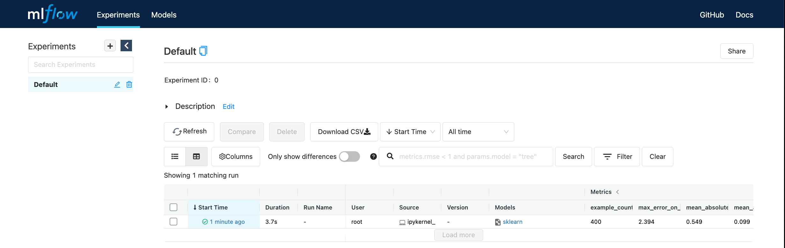
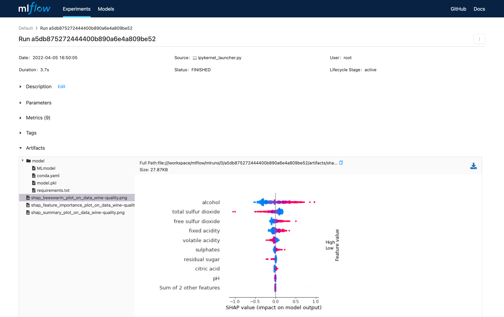
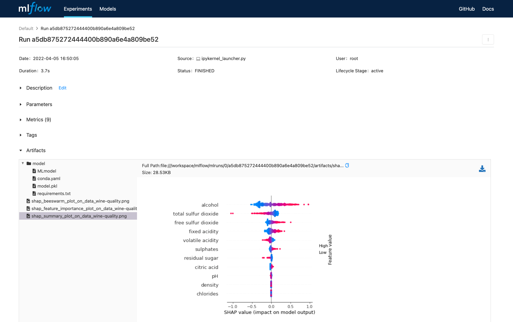
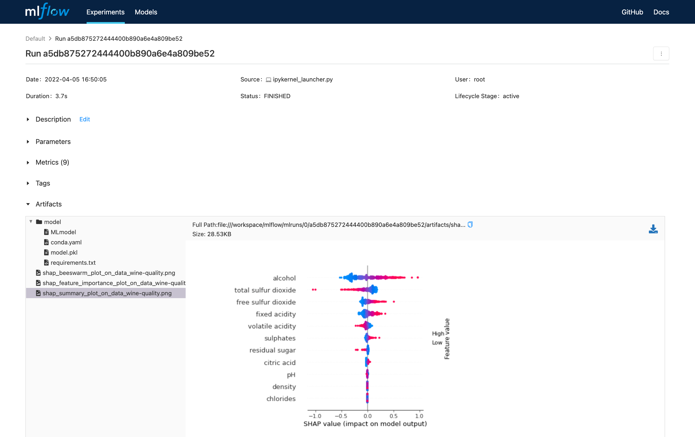

Evaluación del modelo
Ultima modificación: Mayo 14, 2022
https://www.mlflow.org/docs/latest/models.html
Código base
[1]:
def load_data():
import pandas as pd
url = "http://archive.ics.uci.edu/ml/machine-learning-databases/wine-quality/winequality-red.csv"
df = pd.read_csv(url, sep=";")
df['quality'] = pd.to_numeric(df['quality'])
y = df["quality"]
x = df.copy()
x.pop("quality")
return x, y
def make_train_test_split(x, y):
from sklearn.model_selection import train_test_split
(x_train, x_test, y_train, y_test) = train_test_split(
x,
y,
test_size=0.25,
random_state=123456,
)
return x_train, x_test, y_train, y_test
def eval_metrics(y_true, y_pred):
from sklearn.metrics import mean_absolute_error, mean_squared_error, r2_score
mse = mean_squared_error(y_true, y_pred)
mae = mean_absolute_error(y_true, y_pred)
r2 = r2_score(y_true, y_pred)
return mse, mae, r2
def report(estimator, mse, mae, r2):
print(estimator, ":", sep="")
print(f" MSE: {mse}")
print(f" MAE: {mae}")
print(f" R2: {r2}")
def train_estimator(alpha=0.5, l1_ratio=0.5, verbose=1):
import mlflow.sklearn
from sklearn.linear_model import ElasticNet
import mlflow
x, y = load_data()
x_train, x_test, y_train, y_test = make_train_test_split(x, y)
print('Tracking directory:', mlflow.get_tracking_uri())
with mlflow.start_run():
estimator = ElasticNet(alpha=alpha, l1_ratio=l1_ratio, random_state=12345)
estimator.fit(x_train, y_train)
mse, mae, r2 = eval_metrics(y_test, y_pred=estimator.predict(x_test))
if verbose > 0:
report(estimator, mse, mae, r2)
# -------------------------------------------------------------------------------
# evaluación del modelo
#
eval_data = x_test
eval_data['quality'] = y_test
# mlflow.sklearn.log_model(estimator, "model")
model_info = mlflow.sklearn.log_model(estimator, "model")
mlflow.evaluate(
model_info.model_uri,
eval_data,
targets="quality",
model_type="regressor", # "regressor" | "classifier"
dataset_name="wine-quality",
)
Almacenamiento del modelo de prueba
[2]:
!rm -rf mlruns
train_estimator(0.1, 0.05)
Tracking directory: file:///Volumes/GitHub/courses-source/notebooks/mlflow/mlruns
ElasticNet(alpha=0.1, l1_ratio=0.05, random_state=12345):
MSE: 0.48683363717622585
MAE: 0.5493759222336462
R2: 0.30150487868829456
/Volumes/GitHub/courses-source/notebooks/mlflow/.venv/lib/python3.8/site-packages/setuptools/distutils_patch.py:25: UserWarning: Distutils was imported before Setuptools. This usage is discouraged and may exhibit undesirable behaviors or errors. Please use Setuptools' objects directly or at least import Setuptools first.
warnings.warn(
2022/06/03 22:48:12 INFO mlflow.models.evaluation.base: Evaluating the model with the default evaluator.
2022/06/03 22:48:12 WARNING mlflow.models.evaluation.default_evaluator: According to the evaluation dataset label values, the model type looks like classifier, but you specified model type regressor. Please verify that you set the `model_type` and `dataset` arguments correctly.
/Volumes/GitHub/courses-source/notebooks/mlflow/.venv/lib/python3.8/site-packages/tqdm/auto.py:22: TqdmWarning: IProgress not found. Please update jupyter and ipywidgets. See https://ipywidgets.readthedocs.io/en/stable/user_install.html
from .autonotebook import tqdm as notebook_tqdm
2022/06/03 22:48:13 INFO mlflow.models.evaluation.default_evaluator: Shap explainer Linear is used.
Unable to serialize underlying model using MLflow, will use SHAP serialization
2022/06/03 22:48:13 WARNING mlflow.models.evaluation.default_evaluator: Log explainer failed. Reason: 'ElasticNet' object has no attribute 'save'
Visualización con mlflow ui
Para visualizar la interfase use:
mlflow ui
Nota: En docker usar:
mlflow ui --host 0.0.0.0
con:
  
